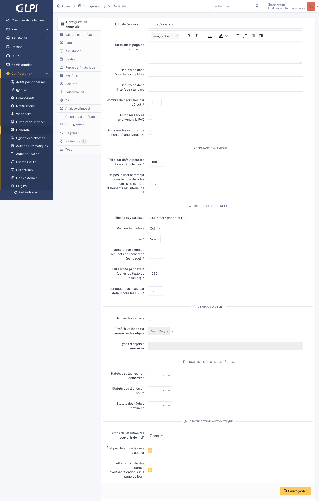
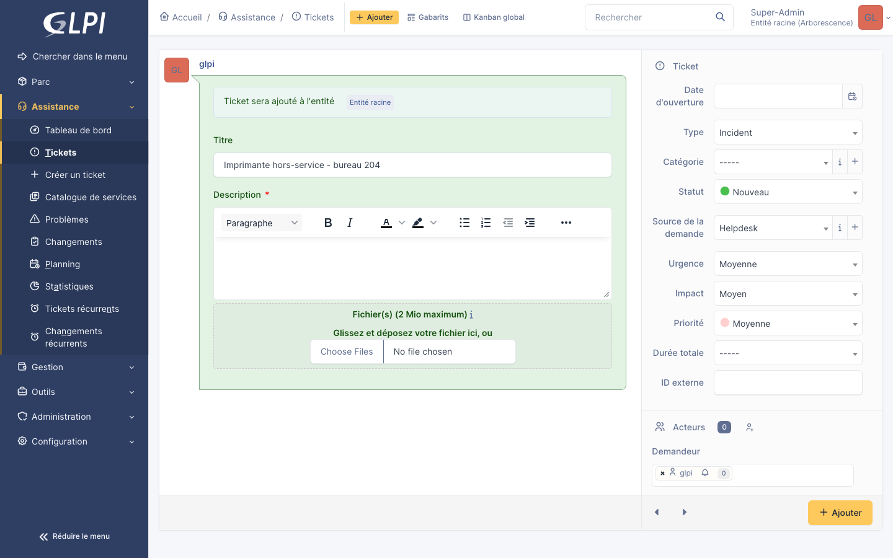
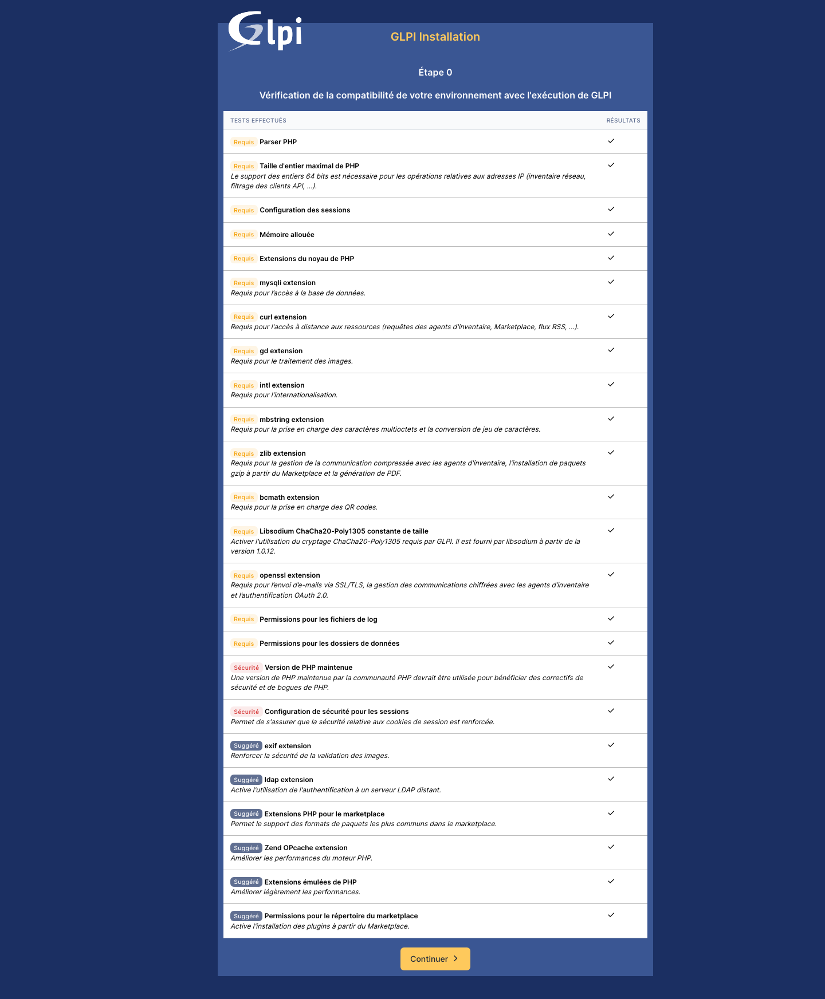

Sécurisation de la solution GLPI chez ALCONSEIL
Comment j'ai protégé un serveur GLPI en alternance : durcissement, gestion des identités, sauvegardes, et continuité de service.
Préambule
Mon dossier technique E6 porte sur la sécurisation du serveur GLPI déployé chez ALCONSEIL pendant mon alternance. Le projet GLPI lui-même (le déploiement) est traité en E5. Ici je me concentre sur ce qui relève de la cybersécurité : protéger les données, gérer les identités, durcir le serveur, garantir la disponibilité.
Pour chaque compétence du référentiel E6, j'explique la mesure mise en place, comment elle est configurée, et pourquoi.
Vue d'ensemble de la sécurité du serveur

Le serveur GLPI est isolé sur un réseau host-only privé en 192.168.56.0/24. Il accède à Internet uniquement pour les mises à jour, via un NAT séparé. L'accès se fait en HTTPS depuis le poste hôte.
Protéger les données à caractère personnel
GLPI stocke des données sur les utilisateurs (nom, email, identifiant AD), sur le matériel et sur les contrats. Quatre mesures protègent ces données.
Principe du moindre privilège sur MariaDB
L'utilisateur glpiuser n'a de droits que sur la base glpidb. Le compte root MariaDB n'est utilisable qu'en local via socket UNIX, jamais en TCP. Aucun compte distant n'a été créé.
Chiffrement du transit en HTTPS
Apache écoute sur le port 443 avec un certificat auto-signé (Let's Encrypt côté prod). TLS 1.2 et 1.3 uniquement, ciphers modernes. Le port 80 redirige vers 443 via mod_rewrite.
Sauvegardes automatiques quotidiennes
Un script backup_glpi.sh est lancé chaque nuit par cron à 02:00. Il fait un mysqldump de la base glpidb, un tar du dossier /var/www/glpi et copie les deux archives sur un volume séparé. Rotation sur 30 jours.
Conformité RGPD
Les comptes des consultants qui quittent l'entreprise sont désactivés dans GLPI puis archivés selon le délai légal. Les sauvegardes sont également purgées.
Préserver l'identité numérique de l'organisation
Plutôt que de créer un compte GLPI séparé pour chaque consultant, on réutilise les comptes Active Directory. Un seul mot de passe à gérer, une seule politique de sécurité, une seule désactivation à la sortie.
Active Directory avec Samba 4
Faute de licence Windows Server, j'ai monté un AD avec Samba 4 en mode AD-DC sur la VM srv-ad. C'est un AD compatible Microsoft, libre, qui parle les mêmes protocoles : LDAP, Kerberos, DNS, SMB. Le domaine est ALCONSEIL.LOCAL.
Authentification LDAP dans GLPI

GLPI interroge l'AD à chaque connexion sur le port LDAP/389. À terme, je passerai en LDAPS (port 636) pour chiffrer aussi cette communication.
Politique de mots de passe
- Longueur minimale : 12 caractères
- Complexité imposée (3 classes sur 4)
- Renouvellement tous les 90 jours
- Verrouillage du compte après 5 tentatives échouées
Sécuriser les équipements et les usages
Pare-feu UFW
UFW est configuré en deny by default : tout est bloqué sauf ce qui est explicitement autorisé. Trois ports ouverts uniquement :
22/tcpSSH (limité au sous-réseau host-only)80/tcpHTTP (redirige vers HTTPS)443/tcpHTTPS
Fail2ban contre le brute-force
Fail2ban surveille les logs SSH et Apache. Une IP qui tente plus de 5 connexions échouées en 10 minutes est bloquée pendant 1 heure. Les logs sont eux-mêmes envoyés à un script qui m'alerte par mail.
Permissions strictes sur les fichiers
Le code GLPI est dans /var/www/glpi avec propriétaire www-data. Les chemins sensibles config/ et files/ sont déplacés en dehors de DocumentRoot, comme recommandé officiellement par Teclib'. Permissions 750 sur les dossiers, 640 sur les fichiers.
Disponibilité, intégrité, confidentialité
Triade DIC appliquée à GLPI
| Critère | Mesure mise en place |
|---|---|
| Disponibilité | Sauvegardes quotidiennes, monitoring du service Apache, redémarrage auto via systemd |
| Intégrité | Hash SHA-256 vérifiés sur les sauvegardes, droits d'écriture limités |
| Confidentialité | HTTPS + LDAP, principe du moindre privilège base de données, chemins protégés |
Test de restauration mensuel
Tous les premiers du mois, je teste la restauration d'une sauvegarde dans une VM de test. Si ça plante, on le sait avant que ce soit nécessaire en vrai. Je documente le résultat dans GLPI lui-même (ticket d'auto-suivi).
Cybersécurité de l'infrastructure
Architecture réseau cloisonnée

Durcissement Ubuntu
- Mises à jour automatiques (
unattended-upgrades) pour les correctifs de sécurité - Désactivation des services non utilisés (
cups,avahi) - SSH : pas de connexion
root, pas de mot de passe, clés uniquement - Fuseau horaire et NTP synchronisés
Sécurisation des chemins GLPI
D'après les recommandations officielles GLPI 10, j'ai déplacé config/ et files/ en dehors du DocumentRoot Apache. Si quelqu'un trouve une faille dans GLPI, il ne peut pas accéder à la config ni aux fichiers téléversés via une simple requête HTTP.
Bilan
Ce dossier m'a fait passer du déploiement (E5) à la sécurisation réelle d'un service. La différence c'est qu'on ne fait pas confiance aux valeurs par défaut : on durcit, on documente, on teste.
La prochaine étape sera de mettre en place du monitoring de sécurité (Wazuh) et de tester en LDAPS, deux choses que j'expérimente déjà sur mon homelab.
Lire le rapport complet (PDF) →